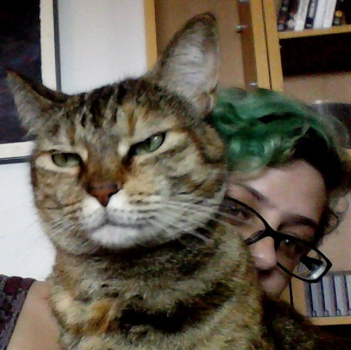

About Me
 My name is Nichole Steig and
I'm a Seattle native currently living with my partner and our
two cats.
While I majored in psychology, I have a love of video games and technology. Like many millenials, I was
raised on the internet, spending much of my teenage years seeking out weird knowledge wherever I could find
it. As an adolescent, I escaped from the awkwardness of growing up with video games. There were whole new
worlds for me to explore and secrets to find. As I got older, I wished more and more that I could create my
own worlds and stories. My dream job would be to work in the video game field, but I would be thrilled to do
anything in the tech field that allows me to be analytical and creative.